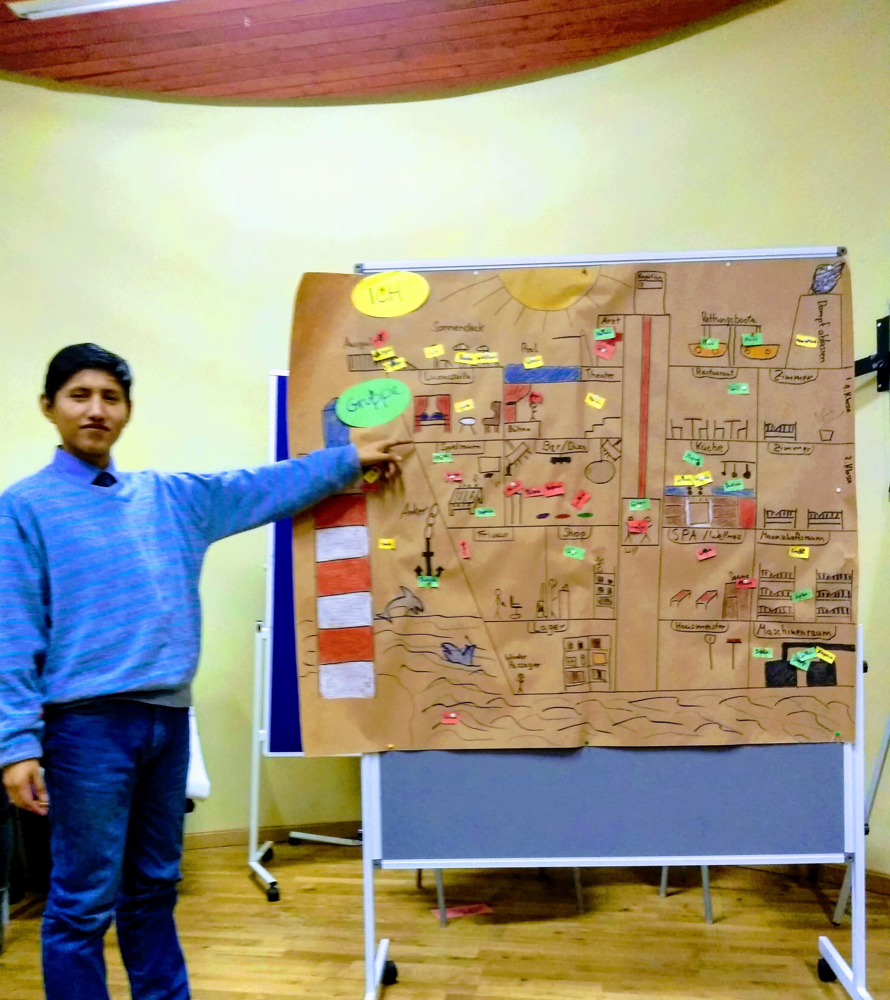
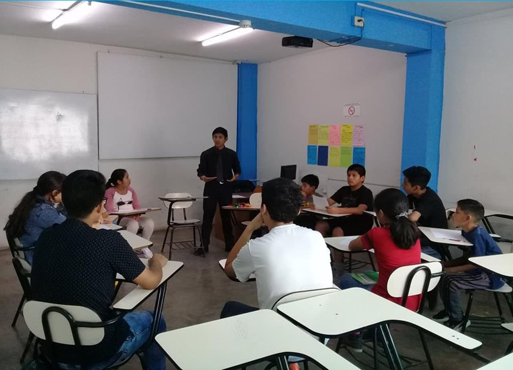
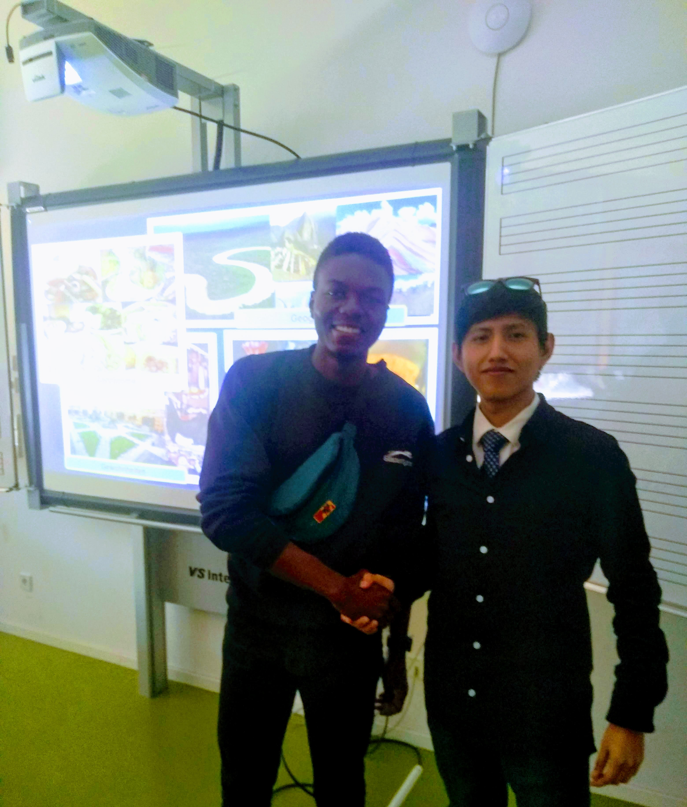
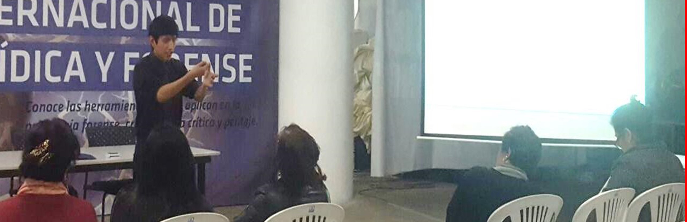
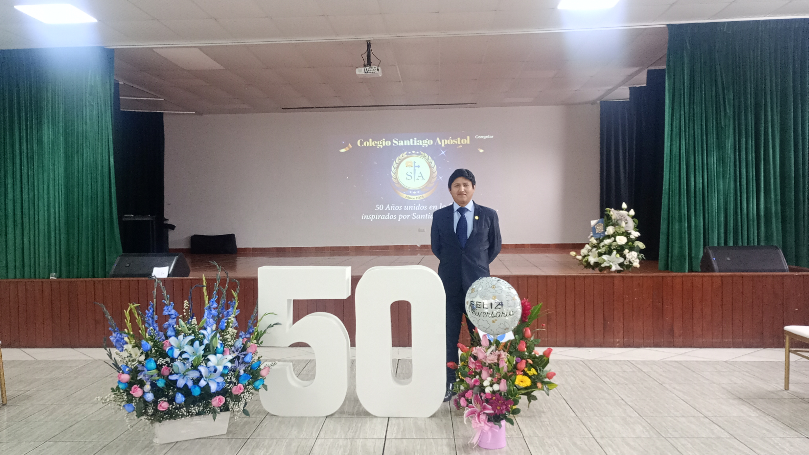
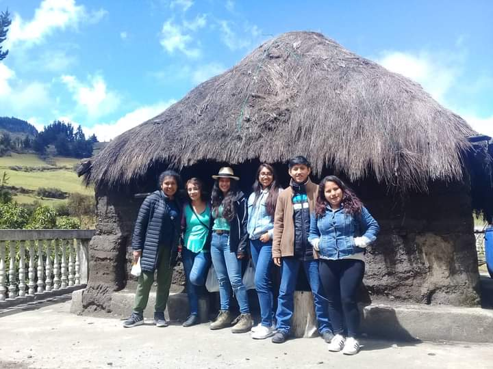

+51 955825992
migueleabade@gmail.com
Sector 3 Grupo 11 Manzana D Lote 1, Villa El Salvador, Lima, Peru - 15836
28. November 1996
Ich verfüge über Deutschkenntnisse auf dem Niveau B1 und habe eine Ausbildung, die auf praktischen Erfahrungen in realen Kontexten basiert. Zwei Jahre lang nahm ich am Sur–Norte-Freiwilligenprogramm in Deutschland teil, wo ich bei Kiebitzhof mitarbeitete. Diese soziale und gemeinschaftliche Arbeitsumgebung ermöglichte es mir, nicht nur sprachliche Kompetenzen zu entwickeln, sondern auch ein tiefes Verständnis der deutschen Sprache im Alltag und im beruflichen Kontext zu gewinnen.
Diese Erfahrung wurde durch meine Ausbildung an der Volkshochschule (VHS) Bielefeld ergänzt, wo ich Deutschkurse besuchte und meine Fähigkeiten im Verstehen, Sprechen und in der Interaktion weiterentwickelte. Dadurch konnte ich eine solide Grundlage im Deutschen aus einer praktischen und kommunikativen Perspektive aufbauen.
Der Kontakt mit Muttersprachlern, die kulturelle Immersion und der Austausch mit Menschen aus verschiedenen Ländern haben mir geholfen, eine umfassende Sichtweise auf das Deutschlernen zu entwickeln. Dabei sehe ich die Sprache nicht nur als grammatische Struktur, sondern vor allem als ein reales Kommunikationsmittel.
Nach meiner Zeit in Deutschland begann ich meine Tätigkeit als Deutschlehrer am CEGNE Santiago Apóstol in Surco, wo ich mit Lernenden verschiedener Niveaus arbeitete und mich auf die progressive Vermittlung der Sprache von A2.2 bis B1.2 konzentrierte.
Derzeit bin ich als Deutschdozent im Sprachenzentrum der Universidad del Pacífico tätig. Dort unterrichte ich Kurse, die auf die ausgewogene Entwicklung aller sprachlichen Kompetenzen ausgerichtet sind: Hörverstehen, Leseverstehen, Schreiben und Sprechen.
Mein pädagogischer Ansatz basiert auf Klarheit, Struktur und praktischer Anwendung der Sprache. Ziel ist es, dass die Lernenden nicht nur die Grammatik verstehen, sondern Deutsch von Anfang an in realen Situationen anwenden können.
Parallel zu meiner Lehrtätigkeit entwickle ich Bildungsinhalte über meinen YouTube-Kanal Herr Abad, der sich auf praxisorientiertes Deutschlernen konzentriert. Dieser Kanal ist darauf ausgerichtet, Lernende durch die Niveaus A1, A2, B1 und B2 zu führen und die Inhalte klar, strukturiert und zugänglich zu präsentieren.
Die Inhalte umfassen sowohl Grammatik als auch thematischen Wortschatz, zum Beispiel Alltag, Wetter, Tiere oder reale Kommunikationssituationen. Dadurch können die Lernenden schrittweise und selbstständig Fortschritte machen.
Das Hauptziel ist es, das Deutschlernen verständlich, strukturiert und praxisnah zu gestalten und Werkzeuge bereitzustellen, mit denen jeder eine solide Grundlage aufbauen und sicher zu höheren Niveaus gelangen kann.







Startsite
Über mich
A1 - Anfänger
A2 - Grundstufe
B1 - Mittelstufe
B2 - Fortgeschritten